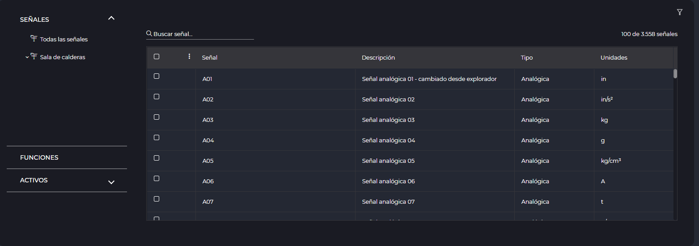

SELECTOR DE SEÑALES
1. Introducción
El selector de señales es una herramienta basica del IDbox, que nos permtirá seleccionar las señales a analizar. Podremos seleccionar señales presentes en: grupos de señales y activos. Además de permtir la selección de funciones, calculados y alias.
2 Selector de señales
El selector de señales siempre mantendrá la misma estructura, presentará un panel lateral que nos permitirá elegir entre la jerarquía de señales, jerarquía de activos, funciones, señales calculadas y alias. En la parte central se muestran las señales al nodo seleccionado.

Podemos filtrar las señales mediante el buscador o bien aplicar filtros complejos haciendo clic en . Esto mostrará la ventana modal de filtrado.